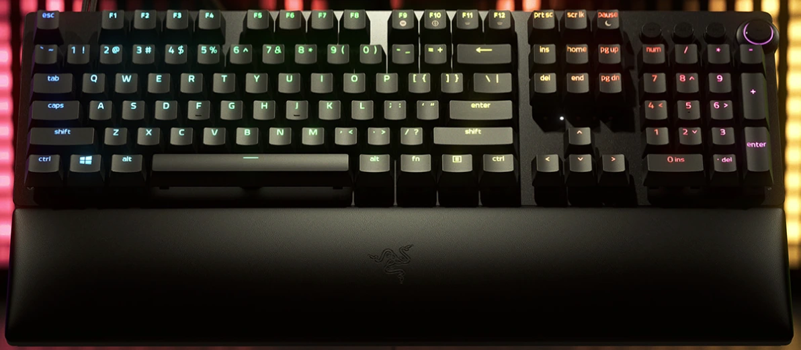
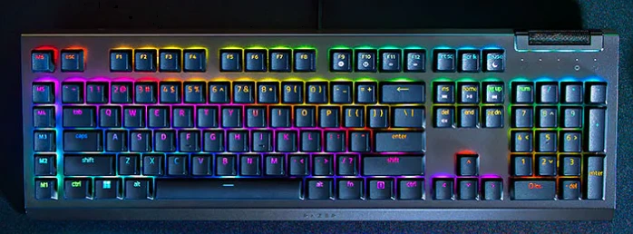
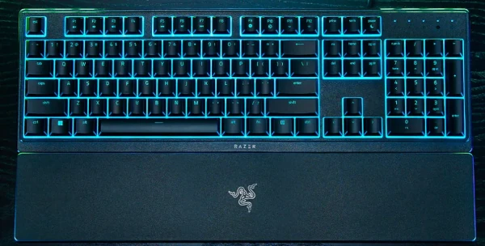
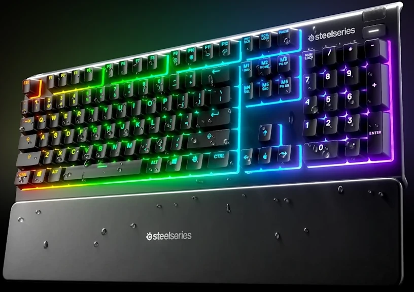
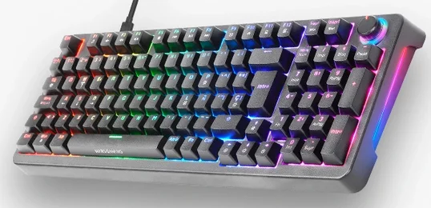
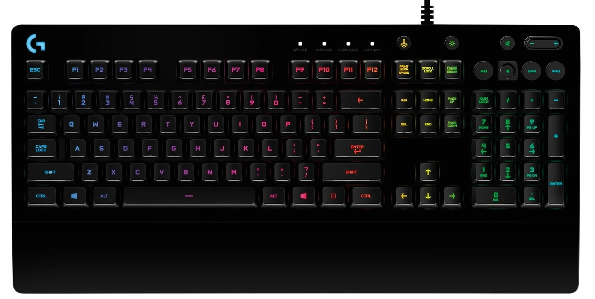
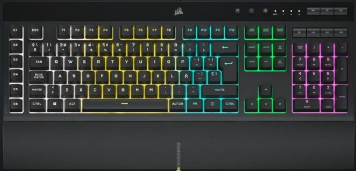
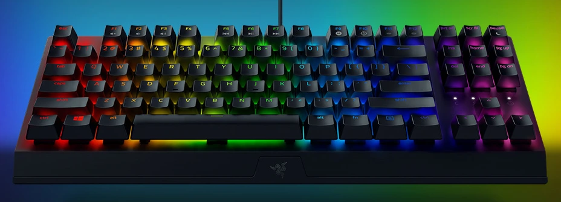
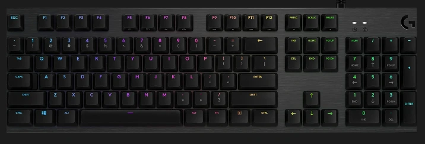
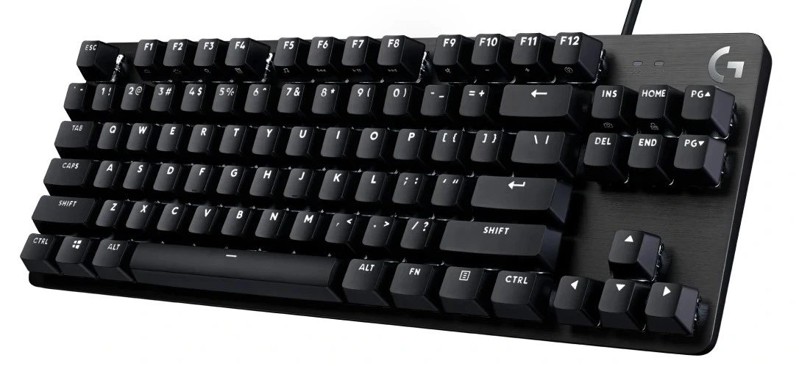

Los Mejores Teclados Gaming de 2025 Probados por un Experto

Contenido actualizado en mayo de 2025
Soy Carlos López, analista con más de 15 años de experiencia probando teclados gaming para PC, desde modelos económicos hasta los más avanzados con switches mecánicos. En esta guía verás los mejores teclados para jugar en 2025 basados en pruebas reales, juegos competitivos y escritura intensiva. Si quieres saber qué teclado gamer comprar según tu estilo de juego y presupuesto, estás en el lugar adecuado. Aquí solo encontrarás análisis honestos y comparativas claras para que elijas bien a la primera.
Si lo que buscas es el mejor teclado Mars Gaming de 2025 tienes esta otra guia de compra.
Índice de Contenidos
- Comparativa rápida de teclados gaming recomendados
- ¿Qué es un teclado gaming?
- ¿Por qué deberías comprar un teclado gaming?
- Comparativa real de los mejores teclados gaming de 2025 (probados en juegos reales)
- ¿Cuál compraría yo?
- Preguntas frecuentes
Comparativa rápida de teclados gaming recomendados
| Imagen | Modelo | Lo mejor | A tener en cuenta | Comprar |
|---|---|---|---|---|
|  | Razer Huntsman V2 Analog | Switches óptico-analógicos con doble acción, construcción premium en aluminio, RGB espectacular y reposamuñecas cómodo | Diseñado para gamers avanzados y pros; gama alta con funciones únicas | Ver en Amazon |
|  | Razer BlackWidow V4 X | Switches mecánicos Green muy responsivos, RGB por tecla, rueda multifunción, teclas multimedia dedicadas | No incluye reposamuñecas, pero excelente calidad-precio dentro de gama media-alta | Ver en Amazon |
|  | Razer Ornata V3 X | Membrana silenciosa, diseño fino y cómodo, teclas planas y resistentes al agua, ideal para trabajar y jugar | Buena opción económica si no necesitas un teclado mecánico | Ver en Amazon |
|  | Razer Apex 3 | Teclado silencioso con resistencia IP32 al agua, RGB por zonas y controles multimedia dedicados | Perfecto para setups compartidos o nocturnos; sin iluminación por tecla | Ver en Amazon |
|  | Mars Gaming MKPRO | Switches mecánicos OUTEMU, chasis de aluminio, RGB completo y reposamuñecas desmontable | Excelente para empezar en mecánicos sin gastar mucho | Ver en Amazon |
|  | Logitech G213 Prodigy | Membrana con buena respuesta, RGB por zonas, reposamuñecas integrado, resistente a líquidos | Alternativa silenciosa y cómoda si no necesitas mecánico | Ver en Amazon |
|  | Corsair K55 RGB PRO | Teclas macro y multimedia dedicadas, resistencia IP42, RGB por zonas y compatible con iCUE | Ideal para productividad y MMO si no necesitas switches mecánicos | Ver en Amazon |
|  | Razer BlackWidow V3 TKL | Formato compacto sin pad numérico, switches Green, RGB individual y diseño robusto | Perfecto para shooters y escritorios con poco espacio | Ver en Amazon |
|  | Logitech G512 | Switches GX (Brown, Red o Blue), chasis de aluminio, RGB por tecla y puerto USB integrado | Equilibrio perfecto entre calidad, rendimiento y estética | Ver en Amazon |
|  | Logitech G413 TKL SE | Diseño TKL compacto, retroiluminación blanca clara, carcasa de aluminio y switches táctiles | Diseño limpio y resistente para setups minimalistas | Ver en Amazon |
Razer Huntsman V2 Analog
Lo mejor: Switches óptico-analógicos con doble acción, construcción premium en aluminio, RGB espectacular y reposamuñecas cómodo.
A tener en cuenta: Diseñado para gamers avanzados y pros; gama alta con funciones únicas.
Ver en AmazonRazer BlackWidow V4 X
Lo mejor: Switches mecánicos Green muy responsivos, RGB por tecla, rueda multifunción, teclas multimedia dedicadas.
A tener en cuenta: No incluye reposamuñecas, pero excelente calidad-precio dentro de gama media-alta.
Ver en AmazonRazer Ornata V3 X
Lo mejor: Membrana silenciosa, diseño fino y cómodo, teclas planas y resistentes al agua, ideal para trabajar y jugar.
A tener en cuenta: Buena opción económica si no necesitas un teclado mecánico.
Ver en AmazonRazer Apex 3
Lo mejor: Teclado silencioso con resistencia IP32 al agua, RGB por zonas y controles multimedia dedicados.
A tener en cuenta: Perfecto para setups compartidos o nocturnos; sin iluminación por tecla.
Ver en AmazonMars Gaming MKPRO
Lo mejor: Switches mecánicos OUTEMU, chasis de aluminio, RGB completo y reposamuñecas desmontable.
A tener en cuenta: Excelente para empezar en mecánicos sin gastar mucho.
Ver en AmazonLogitech G213 Prodigy
Lo mejor: Membrana con buena respuesta, RGB por zonas, reposamuñecas integrado, resistente a líquidos.
A tener en cuenta: Alternativa silenciosa y cómoda si no necesitas mecánico.
Ver en AmazonCorsair K55 RGB PRO
Lo mejor: Teclas macro y multimedia dedicadas, resistencia IP42, RGB por zonas y compatible con iCUE.
A tener en cuenta: Ideal para productividad y MMO si no necesitas switches mecánicos.
Ver en AmazonRazer BlackWidow V3 TKL
Lo mejor: Formato compacto sin pad numérico, switches Green, RGB individual y diseño robusto.
A tener en cuenta: Perfecto para shooters y escritorios con poco espacio.
Ver en AmazonLogitech G512
Lo mejor: Switches GX (Brown, Red o Blue), chasis de aluminio, RGB por tecla y puerto USB integrado.
A tener en cuenta: Equilibrio perfecto entre calidad, rendimiento y estética.
Ver en AmazonLogitech G413 TKL SE
Lo mejor: Diseño TKL compacto, retroiluminación blanca clara, carcasa de aluminio y switches táctiles.
A tener en cuenta: Diseño limpio y resistente para setups minimalistas.
Ver en Amazon¿Qué es un Teclado Gaming?
Un teclado gaming no es simplemente un teclado con luces. Se trata de dispositivos diseñados pensando en la precisión, la velocidad de respuesta y la resistencia. Cuando estás en medio de una partida, cada milisegundo cuenta, y un buen teclado puede ser la diferencia entre ganar o perder. Como gamer y analista, valoro mucho que un teclado gaming responda de forma rápida, cómoda y fiable.
¿Por Qué Deberías Comprar uno?
- Mayor velocidad de respuesta: en juegos de alta competición, tener un teclado con switches rápidos marca la diferencia.
- Durabilidad garantizada: he probado teclados gaming que aguantan millones de pulsaciones sin fallar.
- Mejor ergonomía: para sesiones largas, un teclado bien diseñado reduce la fatiga.
- Personalización y estética: no solo funcionalidad, también aportan estilo único a tu setup.
- Funcionalidades extra: teclas macro, perfiles de usuario y conexión inalámbrica avanzada.
Comparativa real de los mejores teclados gaming de 2025 (probados en juegos reales)
⭐ Valoración del experto: 5/5
El Huntsman V2 Analog es un teclado brutal si buscas lo mejor en tecnología y precisión. Sus switches ópticos-analógicos permiten programar dos funciones por tecla según la presión, algo espectacular en juegos o edición avanzada. La construcción es impecable: aluminio, cable trenzado y retroiluminación RGB impresionante. Lo he usado con shooters, MOBAs y productividad y siempre me ha respondido al máximo nivel. Viene con reposamuñecas y se nota que es un teclado pensado para pros.
Principales características:
- Switches óptico-analógicos Razer™ Analog
- Teclas programables con doble acción por presión
- Iluminación RGB Razer Chroma individual por tecla
- Reposamuñecas ergonómico incluido
- Cuerpo de aluminio con acabado premium
Razer BlackWidow V4 X
⭐ Valoración del experto: 5/5
Este teclado combina rendimiento, diseño y funcionalidades avanzadas. Sus switches Green son táctiles y muy responsivos, ideales para juegos competitivos o escribir con rapidez. Destaco la rueda multifunción y las teclas multimedia dedicadas, perfectas para controlar el volumen y música sin salir del juego. El RGB por tecla es brillante y se configura fácilmente desde Synapse. Un teclado robusto y personalizable sin llegar al precio extremo del V4 Pro.
Principales características:
- Switches Razer Green (táctiles y clicky)
- Iluminación RGB individual por tecla
- Rueda multifunción con funciones personalizables
- Teclas multimedia dedicadas
- Estructura sólida con acabados premium
Razer Ornata V3 X
⭐ Valoración del experto: 3.5/5
El Ornata V3 X es ideal para quienes buscan un teclado económico pero con estilo gamer. Su perfil bajo y membrana silenciosa lo hacen perfecto para oficina o juegos tranquilos. Me gustó su diseño fino, con teclas planas que se sienten suaves y cómodas. Además, es resistente a líquidos, algo muy útil en entornos compartidos. No es mecánico, pero cumple bien en navegación y juegos casuales. Buena elección por un precio muy reducido.
Principales características:
- Perfil ultrabajo con teclas planas
- Membrana silenciosa
- Iluminación RGB por zonas
- Resistente a salpicaduras
- Diseño ligero y cómodo para oficina o gaming
Razer Apex 3
⭐ Valoración del experto: 4/5
Lo que más me gustó del Apex 3 es lo silencioso que es. Las teclas son suaves, ideales para trabajar o jugar sin molestar a nadie. A pesar de ser de membrana, su construcción se nota cuidada. Incluye controles multimedia dedicados y reposamuñecas. Además, es resistente al agua (IP32), algo poco común. Su iluminación RGB por zonas también le da un toque atractivo al setup. Muy recomendable si buscas algo silencioso y bien hecho sin romper el presupuesto.
Principales características:
- Teclas silenciosas de membrana
- Iluminación RGB por zonas
- Resistencia IP32 a líquidos
- Reposamuñecas desmontable
- Controles multimedia dedicados
Mars Gaming MKPRO
⭐ Valoración del experto: 4.5/5
El MKPRO es una de las mejores sorpresas de gama baja. Tiene switches mecánicos OUTEMU que, si bien no están al nivel de los Cherry o Razer, ofrecen una buena experiencia de tecleo. Me sorprendió su construcción en aluminio, que lo hace muy robusto para su precio. Además, cuenta con iluminación RGB y un reposamuñecas desmontable. Es ideal si quieres un teclado mecánico sin gastar demasiado y sin renunciar a estética ni funcionalidades básicas.
Principales características:
- Switches mecánicos OUTEMU rojos
- Iluminación RGB completa
- Reposamuñecas desmontable
- Chasis de aluminio reforzado
- Formato completo con anti-ghosting
Logitech G213 Prodigy
⭐ Valoración del experto: 3.5/5
El G213 es un teclado que ha resistido bien el paso del tiempo. Aunque no es mecánico, su membrana ofrece una buena respuesta y es bastante silenciosa. Lo he usado tanto para juegos como para escribir y me ha dado resultados sólidos. La iluminación RGB por zonas se ve muy bien y se puede configurar con Logitech G Hub. Incluye un reposamuñecas integrado muy cómodo. Ideal para presupuestos ajustados o setups híbridos.
Principales características:
- Teclas de membrana silenciosas
- Iluminación RGB por zonas
- Reposamuñecas integrado
- Resistente a salpicaduras
- Software Logitech G HUB
Corsair K55 RGB PRO
⭐ Valoración del experto: 4/5
Uno de los teclados más completos por su precio. Me sorprendió la cantidad de funciones: tiene teclas dedicadas para macros, multimedia y controles rápidos. La iluminación RGB por zonas es bastante llamativa y el software iCUE permite personalizar todo. El diseño es sobrio pero robusto, y cuenta con certificación IP42 contra derrames. Me ha funcionado genial para MMO y productividad. Muy recomendable si no necesitas switches mecánicos.
Principales características:
- Teclas macro dedicadas
- Iluminación RGB por zonas
- Resistencia al polvo y líquidos (IP42)
- Controles multimedia dedicados
- Compatible con Corsair iCUE
Razer BlackWidow V3 Tenkeyless
⭐ Valoración del experto: 5/5
Probé este teclado durante sesiones intensivas en juegos como Valorant, Apex y StarCraft II, y su rendimiento fue impecable. Sus switches Green ofrecen ese clic táctil satisfactorio que te da control absoluto sobre cada acción. Al ser TKL, me dejó mucho más espacio para mover el ratón, lo cual es una ventaja clara en FPS. El RGB individual por tecla se ve espectacular. El chasis es sólido y resistente. Si buscas precisión y diseño compacto, este teclado no falla.
Principales características:
- Switches mecánicos Razer Green
- Iluminación RGB por tecla
- Formato TKL compacto
- Diseño metálico robusto
- Compatible con Razer Synapse
Logitech G512
⭐ Valoración del experto: 4.5/5
El Logitech G512 me ha sorprendido por su tacto preciso y construcción sólida. Utiliza switches GX mecánicos (puedes elegir entre Brown, Red o Blue), muy estables y con buen recorrido. El chasis de aluminio le da un acabado premium y muy resistente. El RGB por tecla se ve espectacular, y es totalmente personalizable con Logitech G HUB. Perfecto para quienes buscan un teclado mecánico fiable y elegante sin complicarse con florituras innecesarias.
Principales características:
- Switches mecánicos GX (Brown, Red o Blue)
- Iluminación RGB individual por tecla
- Estructura de aluminio cepillado
- Puerto USB passthrough integrado
- Compatible con Logitech G HUB
Logitech G413 TKL SE
⭐ Valoración del experto: 4/5
La versión TKL del G413 mantiene todo lo bueno del modelo grande, pero con un tamaño más compacto. Perfecto para jugadores que quieren más espacio para mover el ratón. Es robusto, con carcasa de aluminio y switches táctiles de buena respuesta. No tiene RGB, solo luz blanca, pero es muy visible y elegante. Me ha resultado muy cómodo en juegos como Apex y Warzone. Cumple con lo esencial sin florituras.
Principales características:
- Formato TKL para mayor espacio en el escritorio
- Switches táctiles duraderos
- Chasis de aluminio cepillado
- Retroiluminación blanca funcional
- Diseño limpio y sin distracciones
¿Cuál compraría yo?
Después de probar todos estos teclados durante semanas, hay varias opciones que destacaría dependiendo de lo que estés buscando. Te cuento mis recomendaciones personales:
🔝 Para jugadores competitivos o exigentes
Sin duda me quedo con el Razer Huntsman V2 Analog. La posibilidad de programar doble función por tecla me parece una ventaja diferencial, especialmente en juegos como Valorant o CS:GO. La el acabado en aluminio lo convierten en una herramienta profesional, más que un simple teclado.
⌨️ Ver Huntsman V2 Analog en Amazon⚖️ Para quienes buscan equilibrio entre calidad y precio
El Razer BlackWidow V4 X me parece el más completo en esta gama: switches mecánicos de calidad, iluminación RGB por tecla, rueda de control y una sensación de robustez excelente. Ideal tanto para jugar como para trabajar cómodamente.
⌨️ Ver BlackWidow V4 X en Amazon💸 Para presupuestos ajustados (pero exigentes)
Si no quieres gastar mucho pero buscas algo que luzca y rinda bien, el Mars Gaming MKPRO es mi apuesta. Tiene switches mecánicos, RGB completo y una estructura que no parece para nada barata. Perfecto si estás montando tu primer setup gaming sin arruinarte.
⌨️ Ver Mars Gaming MKPRO en AmazonPreguntas frecuentes sobre teclados gaming
¿Cuál es el mejor teclado gaming actualmente?
El Razer Huntsman V2 Analog es uno de los mejores teclados gaming del momento gracias a sus switches ajustables, estructura premium y integrada.
Ver Huntsman V2 Analog¿Qué teclado mecánico gaming me recomiendas?
Si buscas un teclado mecánico gaming completo, el Razer BlackWidow V4 X y el Mars Gaming MKPRO ofrecen excelente respuesta, buena construcción y RGB.
Ver BlackWidow V4 X Ver MKPRO¿Qué teclados gaming tienen mejor relación calidad-precio?
El Razer Ornata V3 X y el Razer Apex 3 son opciones asequibles con buen diseño, retroiluminación y gran comodidad para jugar o trabajar.
Ver Ornata V3 X Ver Apex 3¿Cuál es el mejor teclado gaming para shooters (FPS)?
Los teclados TKL como el Razer BlackWidow V3 Tenkeyless y el Razer Huntsman V2 Analog son ideales para FPS: compactos, rápidos y precisos.
Ver BlackWidow V3 TKL Ver Huntsman V2 Analog¿Qué teclado gaming inalámbrico me recomiendas?
En esta comparativa solo hemos analizado teclados con cable por su baja latencia. En futuras actualizaciones incluiremos opciones inalámbricas si cumplen los estándares gaming.
¿Cuál es un teclado silencioso para jugar en casa?
El Razer Apex 3 y el Razer Ornata V3 X usan tecnologías de membrana silenciosas, ideales para entornos compartidos o sesiones largas.
Ver Apex 3 Ver Ornata V3 X¿Qué diferencia hay entre teclado mecánico y de membrana?
El mecánico ofrece mayor precisión y durabilidad, como el MKPRO o el BlackWidow V4 X. Los de membrana, como el G213, son más suaves y silenciosos.
Ver MKPRO Ver BlackWidow V4 X Ver G213¿Cuál es el mejor teclado gaming por menos de 50€?
El Mars Gaming MKPRO ofrece experiencia mecánica a precio reducido. El Logitech G213 también es una opción sólida por ese presupuesto.
Ver MKPRO Ver G213¿Importa que el teclado tenga reposamuñecas?
Sí, mejora la ergonomía si pasas muchas horas escribiendo o jugando. El Razer Huntsman V2 Analog y el Corsair K55 RGB PRO lo incluyen de serie.
Ver Huntsman V2 Analog Ver Corsair K55¿Qué teclado sirve tanto para trabajar como para jugar?
Si buscas versatilidad, el Razer Ornata V3 X y el Razer Apex 3 son silenciosos, cómodos y con buen rendimiento para ambas tareas.
Ver Ornata V3 X Ver Apex 3¿Qué teclado mecánico es resistente y con buen diseño?
El Logitech G512 destaca por su estructura de aluminio, switches GX personalizables y estética sobria. Muy equilibrado en calidad, diseño y precio.
Ver G512Para un setup completo, combina tu teclado con unos buenos auriculares gaming con micrófono y disfruta de comunicación clara en tus partidas online.